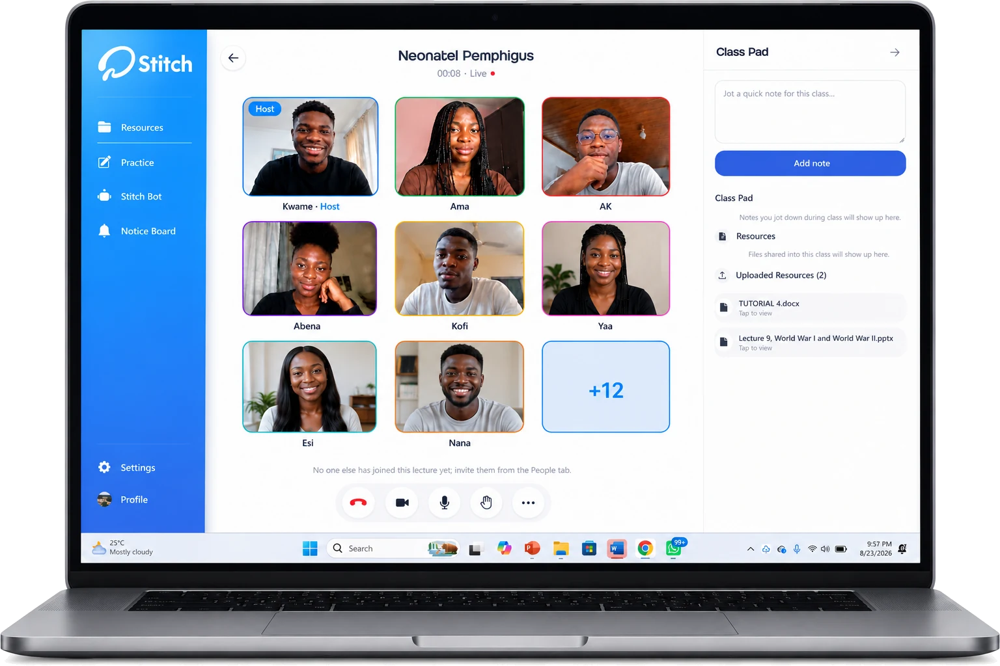
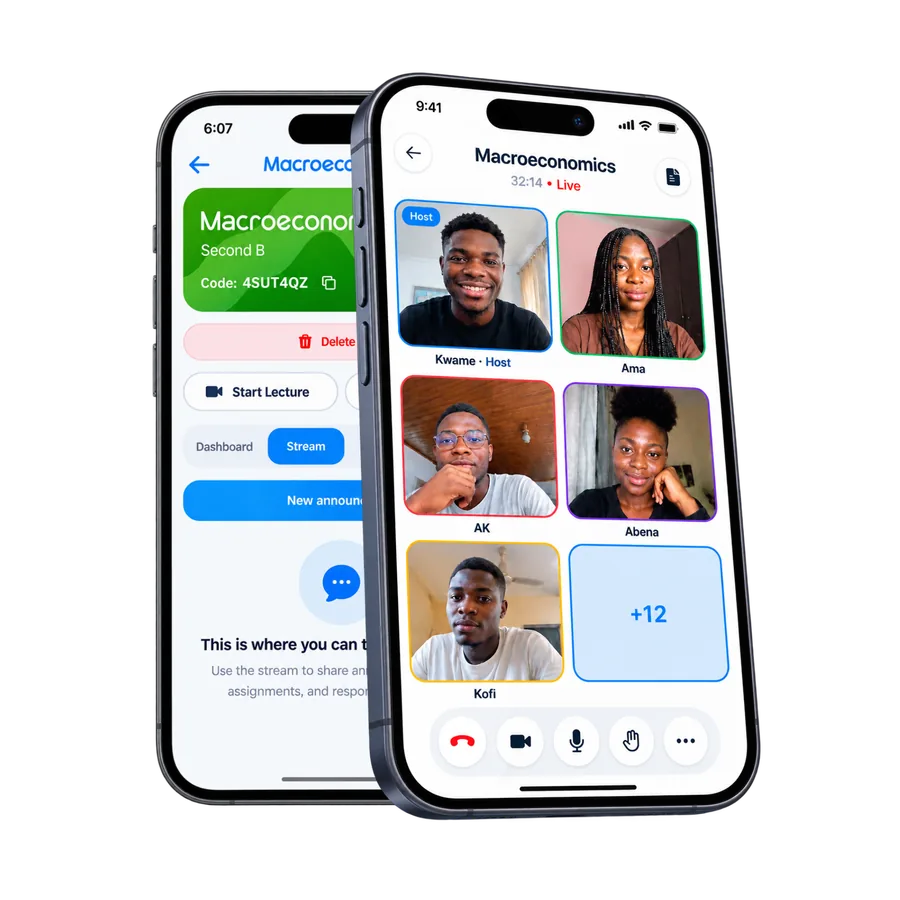
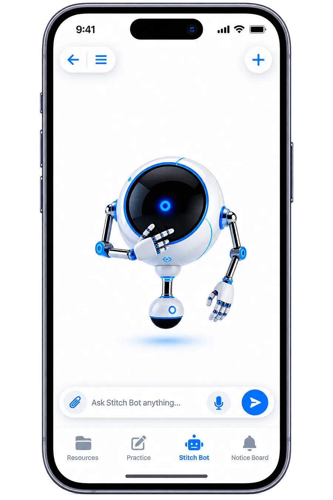

Welcome to the Stitch community
Create a workspace, save your projects, and keep every bright idea within reach.
Stitch is a student network built to close the gap between classmates who never get to meet. It exists to make peer learning the norm, not the exception, so no one has to figure things out alone. It does this by connecting you with students beyond your own classroom, letting you form study groups where anyone can lead, and giving you a place to share notes, past questions, and practice materials, plus surface internships and scholarships along the way. Stitch isn't tied to one school; it's built for students everywhere to find each other.
Stitch is a student network that closes the gap between classmates -- study groups, shared notes, and opportunities, all in one place.
A social layer built for students: outfits, dorm room glow-ups, campus events, late-night study snacks, the wins worth bragging about. It's separate from your study groups and open to everyone, not just your school, so it's less about asking questions and more about showing the world what student life actually looks like. And when a post turns into a conversation, Stitch's built-in messaging keeps it going without ever leaving the app.
Post the moments, not the homework. A shared space for students everywhere to show off what's happening in their day.
To the feedDirect messages, voice notes, and photos, kept in one thread so a conversation with a study partner never gets lost between apps.
Internships, jobs, scholarships, and courses posted by the student community, searchable and filterable in the same place you're already studying.
Every listing shows mode (remote, hybrid, on-site), duration, and how to apply, so you're not clicking through five pages to find out it wants five years of experience.
Deadlines and eligibility sit right on the card, so you can tell in five seconds whether it's worth your time before you start the application.
Community-run courses show up alongside jobs and scholarships, so leveling up a skill is just as easy to find as your next application.
Filter by Opportunities, Internships, Courses, Scholarships, or Others, or just search.
Upload a lecture slide, a past paper, or your own notes: Stitch turns it into practice, instantly.
Auto-generated multiple choice questions pulled straight from your own material, so you're practicing the exact thing your professor taught, auto-graded the moment you submit.
Head-to-head quiz rounds on the same material make revision more engaging and far easier to stay consistent with.
Flip, rate, repeat. Stitch resurfaces the cards you're weakest on more frequently, so your revision time goes where it's needed most.
Start a study group in seconds, share the code, and everything (updates, tasks, and live sessions) lives in one place, led by students, not tied to any school.


Received a code from a fellow student? Enter it and you're immediately connected to the stream.
Join with a codeName your study group and Stitch generates a shareable code instantly, no lengthy setup required.
Start a groupWhoever's leading the session posts updates here, and the moment a live session starts, a banner appears at the top, so nothing gets missed.
Quizzes, practice sets, and shared projects sit in one list with their due dates, so it's always clear what's next and what's already done.
Everyone who has joined with the group code appears here, all students, with a simple way to invite more.
Group admins can start a session instantly or schedule one in advance, and everyone is added automatically, no separate meeting link required. Mic, camera, and leave controls are available the moment you join.

Stitch Bot is your personal study assistant, built to work directly from your class materials so nothing it tells you is generic. It re-explains concepts that didn't click the first time, walks through past questions step by step, quizzes you on the fly from your own notes and slides, turns your materials into practice tests and flashcards automatically, and remembers your course context so you're not re-explaining your syllabus every time.
Whether week one came and went and you're still relying on a fragmented system, or this is the semester you're ready for something better, there's no catching up required. You simply start from where you are.
Every missed announcement, every skipped practice test, every night spent studying alone because coordinating a group felt like too much effort: none of it has to continue. All Stitch needs is your class code to get you set up alongside everyone else.
Join fellow students on Stitch and start the semester the way it should: together.